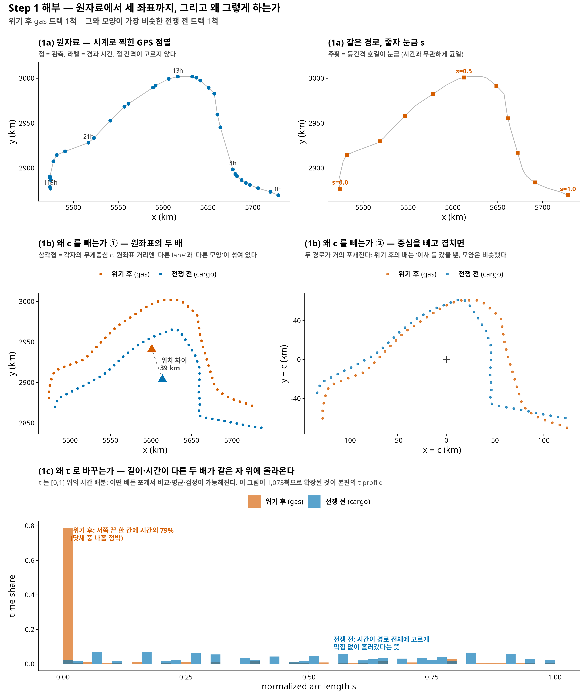
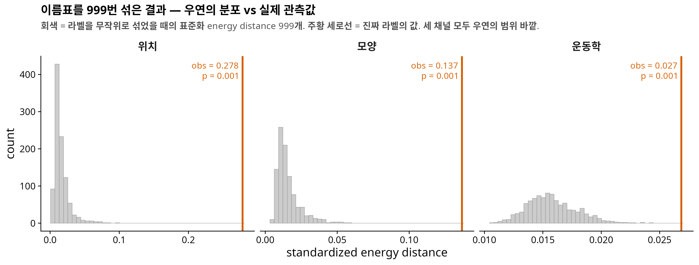
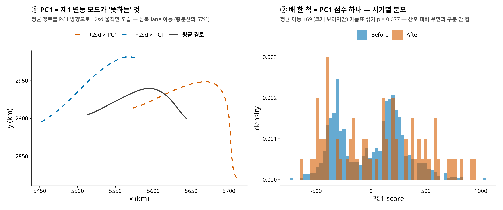
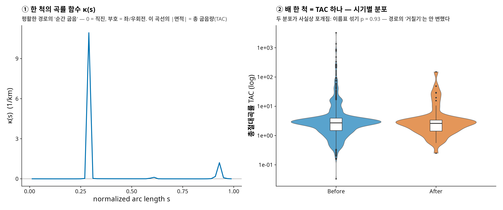
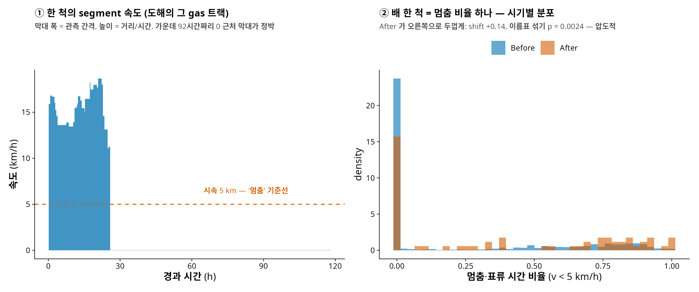
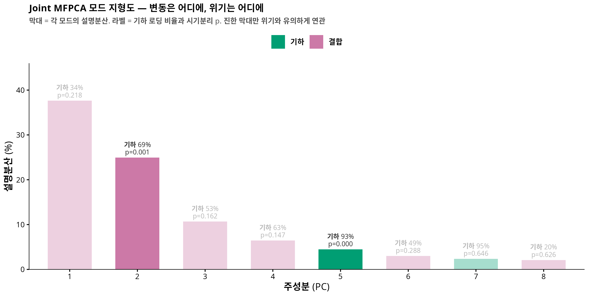
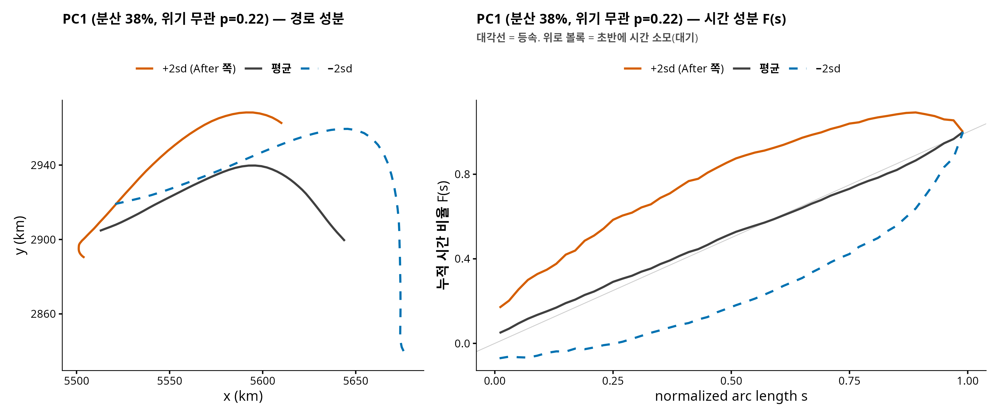
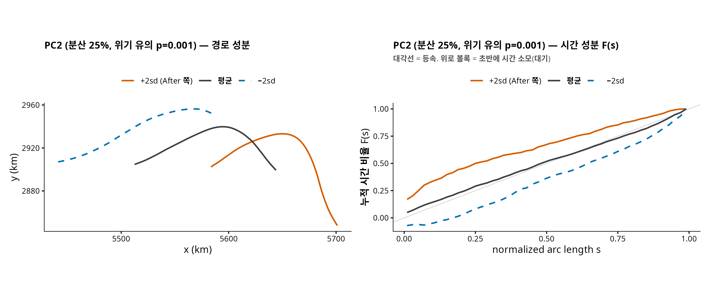

연구 ▷ 호르무즈 ▷ 궤적으로 읽기 — 위기는 배들을 어떻게 바꿨나 (통합본)
이 글은 호르무즈 프로젝트의 네 편(3-채널 분해 · permutation 검정 해부 · 속도·정박 2-상태 이론 · joint MFPCA)을 하나의 완결된 이야기로 엮은 통합본입니다. 한 편이 길지만, 앞에서 세운 도구를 뒤에서 계속 씁니다.
(스튜디오. 화면에 위성 지도 하나 — 호르무즈 해협 위로 파랗고 주황한 실타래 수천 가닥. H 가 마이크를 당긴다.)
H. 오늘 이야기는 배 1,174척의 이동 경로에서 시작해요. 2026년 봄, 호르무즈 해협. 전쟁이 나고, 봉쇄가 있었고, 뉴욕타임스가 그 전후의 선박 항적 데이터를 기사에 실었죠. 전쟁 전 열흘 동안 1,089척, 이란 보복 이후 열흘 동안 85척.
G. 1,089에서 85로요? 12분의 1이 됐네요.
H. 네, 그게 첫 번째 충격이고요. 오늘의 진짜 질문은 그 다음이에요 — 살아남은 그 85척의 항해는, 전쟁 전과 무엇이 달라졌는가? 그리고 그 “달라짐”을 어떻게 하나의 숫자로 말할 것인가.
G. 경로가 바뀌었다, 속도가 느려졌다, 이런 식으로 말하면 되는 거 아닌가요?
H. 바로 그 지점에서 퍼즐이 터집니다.
에피소드 1: 세 개의 검정이 따로 노는 미스터리
H. 같은 데이터에 표준적인 분석 세 가지를 돌렸어요. 결과가 이래요.
| 물었던 질문 | 통계 검정의 대답 (p-value) |
|---|---|
| 궤적 전체가 달라졌나? (좌표 함수 그대로) | \(p = 0.129\) — 글쎄요? |
| 경로가 더 구불구불해졌나? (곡률) | \(p = 0.349\) — 전혀 아님 |
| 속도·정박이 달라졌나? (평균속도, 멈춤 비율) | \(p < 10^{-4}\) — 압도적으로 그렇다 |
G. 잠깐만요, 그 p-value 라는 건 대체 어떻게 뽑은 거예요? 세 검정이 다른 방법인가요?
H. 재료는 셋이 다 다른데, 엔진은 하나예요 — permutation(치환) 검정. 원리가 아주 물리적이에요. 우리 데이터의 각 배에는 “전쟁 전” 또는 “위기 후”라는 이름표가 붙어 있잖아요. 만약 위기가 아무 효과도 없었다면, 이 이름표는 아무 의미 없는 스티커여야 해요. 그렇죠?
G. 스티커를 떼서 아무 배에나 다시 붙여도 똑같아야 한다…
H. 바로 그거예요. 그래서 실제로 그렇게 합니다. 이름표를 컴퓨터로 무작위로 섞어 붙이고 — 1,073장의 스티커를 섞되 “전쟁 전 1,006장, 위기 후 67장”이라는 장수는 유지하고 — 두 집단의 차이를 다시 계산해요. 이걸 수천 번 반복하면 “우연만으로 생길 수 있는 차이”의 분포가 만들어져요. 그 다음 진짜 이름표로 잰 차이를 그 분포 위에 올려놓고 물어요: 우연이 이만큼 큰 차이를 만들 확률이 얼마냐? 그게 p-value 예요.
G. \(p < 10^{-4}\) 라는 건 만 번 섞어도 실제만 한 차이가 안 나왔다는 거고, \(p = 0.129\) 는…
H. 섞은 것 중 열에 하나 꼴로 실제보다 큰 차이가 그냥 나왔다는 뜻이에요. “우연과 구분이 안 된다”는 거죠. 이 방식의 장점은 정직함이에요 — 데이터가 정규분포라든가 하는 가정을 전혀 안 빌려요. 특히 우리처럼 1,006 대 67로 심하게 기운 표본에서는, 분포 가정에 기대는 공식보다 이름표를 실제로 섞어보는 쪽이 훨씬 안전해요.
G. 좋아요, 원리는 알겠어요. 그런데 저라면 그 그림을 어떻게 그리죠? 처음부터 끝까지요.
H. 칠판에 적어볼게요. 정확히 여섯 단계고, 이대로 하면 누구든 같은 그림이 나옵니다. (아래는 나중에 나올 3-수준 분해의 세 채널 기준이지만, 어떤 검정 통계량이든 뼈대는 동일해요.)
Step 0 — 입력. 항적 \(N = 1073\) 개 (전쟁 전 \(n_B = 1006\), 위기 후 \(n_A = 67\)). 각 항적 \(i\) 의 시기 이름표를 \(z_i \in \{0, 1\}\) 로 적어요 (\(1\) = 위기 후). 관측된 이름표 벡터가 \(z^{\mathrm{obs}}\).
Step 1 — 각 항적을 세 좌표로. 여기가 제일 손이 많이 가는 단계니까 원자료부터 풀어서 적을게요. 항적 \(i\) 의 원자료는 GPS 점열이에요:
\[\text{항적 } i \;=\; \bigl\{ (x_j, y_j, t_j) \bigr\}_{j = 1, \dots, n_i} \qquad (x, y \text{ 는 km 좌표, } t \text{ 는 초}).\]
(1a) 시간을 버리고 “길 위의 눈금”을 만든다. 이웃한 두 점 사이의 거리와 시간을 재요:
\[\Delta s_j = \sqrt{(x_{j+1} - x_j)^2 + (y_{j+1} - y_j)^2}, \qquad \Delta t_j = t_{j+1} - t_j, \qquad L = \textstyle\sum_j \Delta s_j .\]
거리를 앞에서부터 누적해 전체 길이로 나누면, 각 점이 “경로의 몇 % 지점”인지가 나옵니다:
\[s_1 = 0, \qquad s_{j+1} = s_j + \Delta s_j / L \;\in\; [0, 1].\]
이 \(s\) 가 새 눈금이에요 — 시계가 아니라 줄자. (동→서로 간 배는 \(s \mapsto 1 - s\) 로 뒤집어 전부 서→동으로 통일.)
G. 잠깐, 아래 도해의 (1a)를 보면 점 간격이 고르지 않잖아요. 그건 관측이 불규칙해서예요, 배 속도가 달라서예요?
H. 둘 다예요 — 점 사이 거리는 \(\Delta s = v \times \Delta t\), 두 인자가 다 흔들리거든요. 도해의 그 배로 실측해 보면: 관측 간격 \(\Delta t\) 자체가 10분에서 92시간까지 제각각이에요. AIS 는 정해진 주기로 찍히는 게 아니라 수신 상황과 벤더 처리에 따라 듬성듬성 남거든요. 동시에 속도도 시속 0.02 km 에서 19 km 까지 변해요 — 서쪽 끝에 점이 뭉친 건 주로 이쪽, 배가 느려지고 멈추면서 같은 자리 근처에 점이 쌓인 거죠. 그리고 이 두 겹의 불규칙성이 바로 (1a)의 존재 이유예요: 시계 기준으로는 배끼리 비교가 안 되니 줄자로 갈아타는 것. 대신 시간 정보를 버리진 않아요 — (1c)의 \(\tau\) 가 “시간이 어디에 몰렸나”를 고스란히 보관합니다.
(1b) 위치와 모양. 줄자 눈금 위에 등간격 격자 \(s_k = (k - \tfrac12)/M\), \(k = 1, \dots, M{=}50\) 을 놓고, 관측점들을 선형보간해서 격자 위 경로를 얻어요:
\[\beta_i(s_k) = \bigl( x_i(s_k), \, y_i(s_k) \bigr) \quad (\text{보간}), \qquad c_i = \tfrac{1}{M} \textstyle\sum_{k} \beta_i(s_k), \qquad \tilde\beta_i(s_k) = \beta_i(s_k) - c_i .\]
여기서 “보간”은 이렇게 합니다. 배가 격자 눈금 \(s_k\) 에서 정확히 관측된 적은 없어요 — 관측점들의 눈금 \(s_j\) 는 비균등하니까. 그래서 원하는 눈금 \(g\) 가 이웃한 두 관측점 사이(\(s_j \le g \le s_{j+1}\))에 떨어지면, 두 점을 잇는 직선 위의 비례 지점을 취합니다:
\[w = \frac{g - s_j}{s_{j+1} - s_j}, \qquad \bigl( x(g), \, y(g) \bigr) = (1 - w)\,(x_j, y_j) + w\,(x_{j+1}, y_{j+1}).\]
“두 관측점 사이 60% 지점의 눈금이면, 지도에서도 그 두 점을 잇는 선분의 60% 지점에 찍는다” — 그게 전부예요. 아래 그림의 주황 줄자 눈금 11개도, \(M = 50\) 격자 경로도 전부 이 한 줄(코드로는 approx(s, x, xout = g))로 만든 겁니다.
G. 그러니까 \(\beta\) 는… 어디서 “추정”되어 나오는 게 아니라?
H. 아니에요, 그게 핵심이에요. \(\beta\) 는 추정이 아니라 결정입니다 — 모형 적합도, 스무딩도, 무작위성도 없어요. 절차를 한 번에 다시 적으면:
- 관측점들을 시간 순서대로 직선으로 잇는다. 이 꺾은선이 우리가 아는 이 배의 경로 전부예요.
- 꺾은선의 총 길이 \(L\) 을 재고, 시작점에서 길이를 따라 \(g \cdot L\) 만큼 걸어간 지점의 좌표가 \(\beta_i(g)\). 걷다가 관측점 \(j\) 와 \(j{+}1\) 사이에서 멈추면 그 선분 위의 비례 지점 — 방금의 보간 공식이 정확히 그 좌표를 줍니다.
- \(g = \tfrac{1}{100}, \tfrac{3}{100}, \dots, \tfrac{99}{100}\) (\(M = 50\) 개)에서 읽으면 끝. \(\beta_i\) 는 \((x, y)\) 쌍 50개, 즉 숫자 100개짜리 벡터예요.
같은 입력이면 언제나 같은 출력이고, 자유롭게 고른 것은 \(M\) 하나뿐입니다(그 선택이 결과를 안 흔든다는 건 본 논문의 민감도 분석에서 확인). 미니예제로 검산: 아래의 장난감 트랙 \(x = (0, 3, 7, 10)\), \(y = 0\) 은 \(x = 10 s\) 인 직선이라, \(M = 5\) 격자 \(g = (0.1, 0.3, 0.5, 0.7, 0.9)\) 에서 \(\beta\) 의 \(x\) 좌표는 정확히 \((1, 3, 5, 7, 9)\) 가 나와야 하고 — 실제로 나옵니다.
\(c_i\) 는 경로의 무게중심(위치), \(\tilde\beta_i\) 는 무게중심을 원점으로 옮겨 놓은 경로(모양)입니다.
(1c) 운동학 — 시간을 줄자 위에 쏟아붓는다. 각 segment \(j\) 는 “어디서(호길이 중점 \(m_j = \tfrac{s_j + s_{j+1}}{2}\)) 얼마나(\(\Delta t_j\) 초)”의 기록이에요. 그 시간을 중점이 속한 칸에 넣습니다:
\[\mathrm{bin}(j) = \lceil m_j \cdot M \rceil, \qquad \mathrm{mass}_k = \sum_{j :\, \mathrm{bin}(j) = k} \Delta t_j, \qquad \tau_i(s_k) = \frac{\mathrm{mass}_k}{\sum_{k'} \mathrm{mass}_{k'}} .\]
말로 하면: 시간의 히스토그램을 시간축이 아니라 경로축 위에 그리는 것. 정박한 배는 \(\Delta s \approx 0\) 인데 \(\Delta t\) 가 크죠 — 그 큰 시간이 통째로 한 칸에 떨어져서 봉우리가 됩니다.
지금까지의 (1a)→(1b)→(1c)를, 그리고 왜 그렇게 하는지를 실제 데이터의 배 두 척으로 보면 이렇습니다. 위기 이후의 gas 트랙 한 척과, 그 배와 모양이 가장 비슷한 전쟁 전 트랙 한 척을 짝지었어요:

G. 가운데 줄이 눈에 들어와요. 원좌표에선 서로 딴 동네에 있던 두 배가, 중심을 빼니까 거의 같은 모양이네요?
H. 그게 “빼는 이유”의 전부예요. 빼기 전의 두 경로 사이 거리에는 이사(39 km)와 모양 차이가 섞여 있고, 뺀 후의 거리는 순수하게 모양이에요. 이걸 분리 안 하면 “위기의 몇 %가 이사고 몇 %가 변형인가”라는 질문 자체를 던질 수 없죠.
G. 그리고 맨 아래 — 한 척만 보면 그냥 그 배 항해일지 요약인데, 두 척을 같은 자 위에 올리니까 비교가 되는군요.
H. 바로 그거예요. \(\tau\) 그림 한 장의 가치는 79% 막대 자체가 아니라, 길이 300 km 짜리 배와 250 km 짜리 배, 닷새 관측과 이틀 관측을 같은 [0,1] 축 위에 포갤 수 있게 됐다는 데 있어요. 포갤 수 있으면 평균 낼 수 있고, 평균 낼 수 있으면 검정할 수 있죠. 이 두 척을 1,073척으로 늘린 게 에피소드 5의 τ profile 이에요. 이제 이걸 장난감 숫자로 손계산해 볼게요.
미니 예제 (손계산용, \(M = 5\)). 점 4개짜리 장난감 항적 — 중간 지점에서 10시간 정박한 배:
| \(j\) | \((x_j, y_j)\) km | \(t_j\) | \(\Delta s_j\) | \(\Delta t_j\) | 중점 \(m_j\) | bin \(= \lceil m_j \cdot 5 \rceil\) |
|---|---|---|---|---|---|---|
| 1 | \((0, 0)\) | 0h | 3 | 1h | \(0.15\) | 1 |
| 2 | \((3, 0)\) | 1h | 4 | 10h | \(0.50\) | 3 |
| 3 | \((7, 0)\) | 11h | 3 | 1h | \(0.85\) | 5 |
| 4 | \((10, 0)\) | 12h | — | — | — | — |
\(L = 10\) km, \(s = (0, 0.3, 0.7, 1)\). 시간 질량은 칸 \((1, 3, 5)\) 에 \((1, 10, 1)\) 시간 →
\[\tau = \bigl( \tfrac{1}{12}, \; 0, \; \tfrac{10}{12}, \; 0, \; \tfrac{1}{12} \bigr) = (0.083, \; 0, \; 0.833, \; 0, \; 0.083).\]
“경로 가운데 칸에서 전체 시간의 83%” — 정박이 봉우리가 되는 걸 손으로 확인했어요. 위치는 \(c = (5, 0)\), 딱 경로 한가운데고요.
이 전부를 실행되는 R 함수 하나로 적으면:
track_to_channels <- function(x, y, t, M = 50) {
ds <- sqrt(diff(x)^2 + diff(y)^2) # (1a) segment 길이 (km)
dt <- diff(t) # segment 시간 (초)
s <- c(0, cumsum(ds)) / sum(ds) # 정규화 호길이 [0,1]
if (tail(x, 1) < x[1]) s <- 1 - s # 서→동 방향 통일
g <- (1:M - 0.5) / M # (1b) M점 격자
o <- order(s)
beta <- cbind(approx(s[o], x[o], xout = g)$y,
approx(s[o], y[o], xout = g)$y)
c_i <- colMeans(beta) # ① 위치
shape <- sweep(beta, 2, c_i) # ② 모양
mid <- (s[-length(s)] + s[-1]) / 2 # (1c) segment 중점
bin <- pmin(M, pmax(1, ceiling(mid * M)))
mass <- tapply(dt, factor(bin, levels = 1:M), sum)
mass[is.na(mass)] <- 0
tau <- as.numeric(mass / sum(mass)) # ③ 운동학
list(position = c_i, shape = shape, tau = tau)
}
# 미니 예제 검증 — 위 표와 동일 (실행 확인됨)
track_to_channels(x = c(0, 3, 7, 10), y = c(0, 0, 0, 0),
t = c(0, 1, 11, 12) * 3600, M = 5)$tau
#> [1] 0.0833 0.0000 0.8333 0.0000 0.0833 (= 1/12, 0, 10/12, 0, 1/12)Step 2 — 쌍별 거리 행렬. 채널마다 \(N \times N\) 거리 행렬을 만들어요.
\[D^{\mathrm{pos}}_{ij} = \lVert c_i - c_j \rVert, \qquad D^{\mathrm{shp}}_{ij} = \tfrac{1}{\sqrt{M}} \lVert \tilde\beta_i - \tilde\beta_j \rVert, \qquad D^{\mathrm{kin}}_{ij} = \arccos\!\textstyle\sum_k \sqrt{\tau_i(s_k)\,\tau_j(s_k)}.\]
채널마다 단위(km, km, 라디안)가 다르니 각 행렬을 자기 평균으로 나눠 무차원화합니다: \(D \leftarrow D / \overline{D}\). 여기까지가 비싼 계산이고, 딱 한 번만 합니다 — 거리는 이름표와 무관하니까요.
Step 3 — 검정 통계량. 이름표 벡터 \(z\) 가 주어지면, “두 집단이 얼마나 다른 곳에 사나”를 energy distance 로 잽니다:
\[T(z) \;=\; \underbrace{\frac{2}{n_A n_B} \sum_{z_i = 1} \sum_{z_j = 0} D_{ij}}_{\text{집단 사이 평균거리} \times 2} \;-\; \underbrace{\frac{1}{n_A^2} \sum_{z_i = z_j = 1} D_{ij}}_{\text{위기 후 집단 안}} \;-\; \underbrace{\frac{1}{n_B^2} \sum_{z_i = z_j = 0} D_{ij}}_{\text{전쟁 전 집단 안}}.\]
직관: 두 집단이 같은 분포에서 나왔다면 “사이 거리”와 “안 거리”가 비슷해서 \(T \approx 0\). 다른 곳에 살수록 \(T\) 가 커져요.
Step 4 — 이름표 999번 섞기. \(b = 1, \dots, 999\) 에 대해: \(z^{\mathrm{obs}}\) 를 무작위로 재배열한 \(z^{(b)}\) 를 뽑고 (1의 개수 67은 유지!) \(T(z^{(b)})\) 를 계산해요. \(D\) 는 이미 있으니 재배정 하나당 행렬-벡터 곱 한 번이면 끝나요. 이 999개가 그림의 회색 히스토그램 — “위기가 무효라는 세계에서 나올 수 있는 \(T\) 값들”이에요.
Step 5 — 관측값과 p-value. 진짜 이름표의 \(T(z^{\mathrm{obs}})\) 가 주황 세로선. p-value 는 등수 세기예요:
\[\hat{p} \;=\; \frac{1 + \#\{\, b : T(z^{(b)}) \ge T(z^{\mathrm{obs}}) \,\}}{999 + 1}.\]
우리 데이터에선 999개 전부가 관측값보다 작았으니 \(\hat p = \tfrac{1 + 0}{1000} = 0.001\).
G. 분모가 999가 아니라 \(999+1\) 이고 분자에도 \(1\) 이 붙네요?
H. 관측 이름표 자신도 후보 중 하나로 세는 거예요. 이렇게 하면 귀무가설 아래에서 \(T(z^{\mathrm{obs}})\) 는 999개의 \(T(z^{(b)})\) 와 완전히 같은 자격의 값이라 — 이름표가 무의미하면 1000개 중 등수가 균등 — \(\Pr(\hat p \le \alpha) \le \alpha\) 가 유한한 반복 횟수에서도 정확히 보장돼요. B 를 늘리면 p 가 더 세밀해질 뿐, 정직함은 처음부터 보장이죠.
전체를 의사코드로 적으면 이게 다예요:
입력: 거리행렬 D (N×N, 채널별), 이름표 z_obs (1이 n_A개), B = 999
D ← D / mean(D) # 채널 표준화
T_obs ← T(z_obs) # Step 3 의 공식
for b in 1..B:
z_b ← z_obs 의 무작위 재배열 # 1의 개수 유지
T_b ← T(z_b)
p̂ ← (1 + #{b : T_b ≥ T_obs}) / (B + 1)
그림 ← T_1..T_B 히스토그램(회색) + T_obs 세로선(주황)세 채널은 같은 재배열 \(z^{(b)}\) 들을 공유해요 — 그래서 세 패널의 회색 산들이 “같은 우연”을 서로 다른 채널에서 본 것이 되고, 패널끼리 직접 비교할 수 있어요. 그 결과가 이 그림입니다.

G. 셋 다 우연 바깥이라 “확실함”은 같은데, 벗어난 거리가 다르네요. 위치는 저 멀리 있고 운동학은 턱걸이고.
H. 그 관찰을 기억해 두세요 — 에피소드 4의 복선이에요. “얼마나 확실한가”와 “얼마나 큰가”가 벌써 갈라지기 시작했죠.
G. 그럼 세 줄의 “재료”는 각각 뭐였어요? 하나씩 뜯어봐 주세요.
H. 좋아요, 한 줄씩 — 각각 스텝 → 그림 → 코드 → 결과 순서로요. 미리 하나만: 아래 코드는 특수 패키지 없이 그대로 돌아가는 단순화 재현판이에요. 원논문 스펙(B-spline 기저, GCV 평활 등)의 p 는 \(0.129 / 0.349 / {<}10^{-4}\) 이고, 이 단순화판을 실제로 돌리면 \(0.077 / 0.93 / 0.0002\) — 숫자는 조금 다르지만 세 결론(애매 / 전혀 아님 / 압도적)은 정확히 같습니다.
첫째 줄 — “궤적 전체가 달라졌나?” (함수형 PCA)
- 모든 배를 Step 1b 의 \(\beta\) 로 바꾼다 → 배 한 척 = 숫자 100개 (\(x\) 50 + \(y\) 50). 1,073척이면 \(1073 \times 100\) 행렬.
- 이 행렬에 PCA — 1,073개의 점이 100차원 공간에 떠 있고, 가장 크게 흩어진 방향이 PC1(제1 변동 모드). 그 방향이 무엇을 뜻하는지는 평균 경로를 그 방향으로 밀어보면 안다 (아래 그림 ①: 남북 lane 이동, 총분산의 57%).
- 배 한 척의 PC1 점수 = 그 배가 그 방향으로 얼마나 가 있는가, 숫자 하나.
- 시기별 PC1 점수 평균의 차이를 통계량으로, 이름표 섞기에 올린다.

pc <- prcomp(Bgeo) # Bgeo: 1073 x 100, β 를 쌓은 행렬
sc1 <- pc$x[, 1] # 배별 PC1 점수
obs <- mean(sc1[after]) - mean(sc1[!after])
null <- replicate(4999, { z <- sample(after); mean(sc1[z]) - mean(sc1[!z]) })
(1 + sum(abs(null) >= abs(obs))) / 5000 #> 0.077 — 애매G. 잠깐만요. PCA 를 두 시기 합쳐서 한 번 걸었네요? 두 시기 각각에 FPCA 를 걸어야 하는 거 아니에요?
H. 좋은 의심인데, 비교가 목적이면 합쳐서 한 번이 맞아요. 이유가 세 겹이에요.
첫째, 비교에는 공통 자(尺)가 필요해요. 시기별로 각각 걸면 Before 의 PC1 과 After 의 PC1 은 서로 다른 방향 — 100개 숫자의 서로 다른 선형결합 — 이에요. 그러면 “Before 점수 평균 vs After 점수 평균”은 서로 다른 질문에 대한 답 두 개를 빼는 셈이라 의미가 없어요. 키는 cm 자로 재고 몸무게는 kg 저울로 잰 다음 둘을 빼는 격이죠.
둘째, 이름표 섞기와의 정합. 합친 PCA 는 이름표를 전혀 안 보고(비지도) 축을 만들어요. 그래서 이름표를 999번 섞는 동안 축은 그대로고, 검정의 정직함(에피소드 1의 randomization 보장)이 유지돼요. 시기별 축을 쓰면 검정 통계량 자체가 이름표의 함수가 되어서, 섞을 때마다 PCA 두 번을 다시 걸지 않는 한 검정이 망가집니다.
셋째, “각각 걸기”가 맞는 질문은 따로 있어요. “두 시기의 변동 구조 자체(모드의 방향, 분산의 스펙트럼)가 달라졌나?”를 묻는다면 시기별 FPCA 를 걸어 공분산을 비교하는 게 맞아요 — 그건 “분포가 이동했나”(우리 질문)와는 다른 질문이에요.
G. 그래도 합친 축은 1,006척인 Before 가 지배할 텐데, 그게 결과를 왜곡하진 않아요?
H. 그것도 실제로 확인해 봤어요. 세 가지 방식으로 축을 만들어 비교하면:
| 축을 만든 방법 | 평균 이동 | p | 합친 축과의 방향 일치 \(\lvert\cos\rvert\) |
|---|---|---|---|
| 두 시기 합침 (본문) | \(+69.4\) | \(0.077\) | — |
| Before 만으로 축 → 전체 사영 | \(+67.4\) | \(0.079\) | \(0.999\) |
| After 67척만으로 축 | — | — | \(0.978\) |
세 축이 사실상 같은 방향(\(\lvert\cos\rvert \ge 0.97\))이고, Before-축으로 갈아타도 결과는 그대로예요. 게다가 After 쪽만으로 축을 만들면 67척으로 100차원 방향을 추정하는 셈이라 오히려 불안정하고요. 원칙(공통 자 + 이름표 불변)과 실증(어느 축이든 동일)이 같은 답을 줍니다.
둘째 줄 — “경로가 더 구불구불해졌나?” (곡률)
- \(\beta\) 를 그대로 두 번 미분하면 관측 잡음이 폭발해요 (미분은 잡음 증폭기). 그래서 먼저 평활: 격자 경로에 부드러운 스플라인을 통과시킨다.
- 평활 곡선의 1·2차 도함수로 곡률 \(\kappa(s) = \dfrac{x'y'' - y'x''}{(x'^2 + y'^2)^{3/2}}\) — 지점별 “순간 굽음”(0 = 직진, 부호 = 좌/우회전).
- 배 한 척당 \(|\kappa(s)|\) 를 경로 전체로 합쳐 총 굽음량(TAC) 하나로.
- TAC(로그)의 시기 평균 차 → 이름표 섞기.

sx <- smooth.spline(g, bx, df = 8); sy <- smooth.spline(g, by, df = 8)
d1x <- predict(sx, g, deriv=1)$y; d2x <- predict(sx, g, deriv=2)$y
d1y <- predict(sy, g, deriv=1)$y; d2y <- predict(sy, g, deriv=2)$y
kap <- (d1x*d2y - d1y*d2x) / (d1x^2 + d1y^2)^1.5
TAC <- mean(abs(kap)) * L # 한 척의 총 굽음량
# → TAC 를 전 척에 계산, log(TAC) 평균차를 이름표 섞기: p = 0.93 — 전혀 아님셋째 줄 — “속도·정박이 달라졌나?” (운동학 scalar)
- 연속된 두 관측점에서 segment 속도 \(v_j = \Delta s_j / \Delta t_j\).
- 시속 60 km 초과 segment 는 위치 잡음으로 버린다.
- 배 한 척당 두 숫자: 시간가중 평균속도 \(\bar v = \sum v_j \Delta t_j / \sum \Delta t_j\) 와 멈춤 비율 = (\(v < 5\) km/h 인 시간)/(전체 시간).
- 각각 시기 평균 차 → 이름표 섞기.

v <- ds / (dt/3600); keep <- v < 60 # segment 속도, 잡음 컷
vbar <- sum(v[keep]*dt[keep]) / sum(dt[keep]) # 시간가중 평균속도
stpf <- sum(dt[v < 5]) / sum(dt) # 멈춤·표류 시간 비율
# → 두 지표의 시기 평균차를 이름표 섞기: p = 0.0002 / 0.0024 — 압도적H. 정리하면 — 세 검정 모두 재료를 “배 한 척 = 숫자 하나”로 줄인 뒤 같은 이름표 섞기에 올린 거예요. 그런데 첫째 줄은 100개 숫자를 PC1 하나로 줄이며 위치·모양·운동학이 뒤섞였고, 둘째 줄은 모양의 아주 좁은 단면(거칠기)만 봤고, 셋째 줄은 운동학만 정확히 겨눴죠. 이 비대칭이 다음 퍼즐로 이어집니다.
공통: 시기 라벨 permutation, 양측, “전쟁 전/위기 후” 표본 크기 고정 재배정. 좌표는 경도·위도 → 중심위도 보정 equirectangular 로 km 변환.
- 원좌표 MFPCA — 궤적별 호길이(arc-length) 재매개화 → 공통 격자 보간 → B-spline 기저 전개 → 다변량 FPCA (Ramsay–Silverman; Happ–Greven). 상위 2개 성분이 총분산 72.6% (상위 3개 81.1%). 통계량 = 제1주성분 점수의 시기 간 평균 차 (\(\Delta\xi_1 = -87.85\)). Permutation \(B = 5000\) → \(p = 0.129\).
- 곡률 (TAC) — order-6 B-spline 평활 (기저 20개, 4계 도함수 벌점, GCV 로 \(\lambda\) 선택), 점 6개 이상·경로 1 km 이상 트랙만. 곡률 \(\kappa(s) = (x'y'' - y'x'')/(x'^2+y'^2)^{3/2}\) → 트랙별 총절대곡률(TAC)·최댓값·95백분위. 통계량 = TAC 시기 평균 차. Permutation → \(p = 0.349\) (선종별 층화도 전부 null).
- 속도·정박 scalar — segment 속도 = 거리/시간 (암시 속도 60 km/h 초과 segment 는 위치 잡음으로 폐기). 트랙별 시간가중 평균속도 (위기 후 \(-5.32\) km/h) 와 멈춤·표류 시간비율 (속도 \(<5\) km/h 기준, \(+0.155\)). 각각 permutation → 둘 다 \(p < 10^{-4}\). 층화: cargo \(p<10^{-4}\), gas \(p=0.0015\), tanker \(p=0.95\).
전체 명세는 본 논문 부록 A 참조.
G. 알겠어요. 그런데 그러니까 더 이상한데요. 속도가 그렇게 확실하게 바뀌었으면, 궤적 전체를 보는 첫 번째 검정도 잡아냈어야 하는 거 아니에요?
H. 그렇죠! 그게 이 논문의 출발점이에요. 문제는 통계가 아니라 표현에 있었어요. 궤적을 \((x(t), y(t))\) — “시각 \(t\) 에 어디 있었다” — 로 적으면, 서로 다른 세 가지 정보가 한 그릇에 섞여요. 어디로 갔는지, 어떤 모양의 길이었는지, 그 길을 어떻게 지나갔는지.
G. 섞이면 왜 문제죠?
H. 강한 신호가 조용한 신호에 희석돼요. 라디오 세 채널을 한 스피커로 동시에 틀면, 제일 큰 방송도 웅웅거리는 소음이 되잖아요. \(p = 0.129\) 라는 애매한 숫자가 바로 그 웅웅거림이에요.
에피소드 2: 출근길의 세 가지 변화
H. 그래서 궤적을 딱 세 조각으로, 겹치지도 빠지지도 않게 분해합니다. 출근길로 비유해 볼게요. 어느 날 당신의 출근이 평소와 달라졌다면, 논리적으로 세 가지 경우예요.
G. 음… 첫째, 아예 다른 동네 길로 갔다.
H. 그게 위치(position) — 수학적으로는 경로의 중심점 \(c\). 둘째?
G. 같은 동네인데 길의 생김새가 달랐다. 직진하던 걸 빙 둘러 갔다든가.
H. 모양(shape) — 중심을 빼고 남은 경로의 형태 \(\tilde\beta(s)\). 셋째가 제일 재밌어요.
G. 완전히 같은 길인데… 막혀서 서 있었다?
H. 정확해요. 운동학(kinematics) — 같은 길 위에서 시간을 어떻게 썼는가. 이 세 번째를 재는 도구가 이 논문의 심장인데, 이름이 점유밀도 \(\tau(s)\) 예요. 길을 100 구간으로 나누고, 각 구간에서 보낸 시간의 비율을 재는 거죠. 막힘 없이 일정한 속도로 지나가면 \(\tau\) 는 어디서나 1로 평평해요. 어딘가에서 멈춰 서 있으면? 그 지점에 뾰족한 봉우리가 솟아요.
G. 택배 트럭 GPS 로 “어디서 오래 서 있었나” 지도 그리는 느낌이네요.
H. 딱 그거예요. 그리고 수학적으로 예쁜 게 두 가지 있어요. 하나 — 위치와 모양은 피타고라스 정리처럼 정확히 직교해요. 겹침이 0이라는 걸 증명할 수 있어요. 둘 — \(\tau\) 는 확률밀도라서 \(\sqrt{\tau}\) 를 취하면 구면 위의 점이 되고, 구면 기하학의 도구(평균, 거리, PCA)가 전부 공짜로 따라와요.
G. “증명할 수 있다”고 하셨는데 — 진짜 증명이 논문에 있어요? 어렵나요?
H. 본 논문의 명제 1이고, 증명이 세 줄이에요. 그대로 옮겨볼게요.
명제 (직교 분할). 두 배의 격자 경로를 \(\beta_1 = c_1 + \tilde\beta_1\), \(\beta_2 = c_2 + \tilde\beta_2\) 로 분해하면, 경로 간 거리의 제곱은 정확히 두 조각의 합이다: \[\underbrace{\tfrac{1}{M}\textstyle\sum_k \lVert \beta_1(s_k) - \beta_2(s_k) \rVert^2}_{\text{경로 간 거리}^2} \;=\; \underbrace{\lVert c_1 - c_2 \rVert^2}_{\text{위치 차}^2} \;+\; \underbrace{\tfrac{1}{M}\textstyle\sum_k \lVert \tilde\beta_1(s_k) - \tilde\beta_2(s_k) \rVert^2}_{\text{모양 차}^2}.\]
증명. 좌변에 \(\beta_1 - \beta_2 = (c_1 - c_2) + (\tilde\beta_1 - \tilde\beta_2)\) 를 넣고 제곱을 전개하면 \[\lVert c_1 - c_2 \rVert^2 \;+\; 2\,\Bigl\langle c_1 - c_2, \; \tfrac{1}{M}\textstyle\sum_k \bigl( \tilde\beta_1(s_k) - \tilde\beta_2(s_k) \bigr) \Bigr\rangle \;+\; \tfrac{1}{M}\textstyle\sum_k \lVert \tilde\beta_1(s_k) - \tilde\beta_2(s_k) \rVert^2 .\] 가운데 교차항의 \(\sum_k \tilde\beta_i(s_k)\) 는 정의상 0 이다 — \(\tilde\beta\) 는 평균(무게중심)을 빼서 만든 것이므로 평균이 0. 상수 벡터와 평균 0 벡터의 내적이 사라지니 교차항이 통째로 죽고, 남는 것이 우변. \(\blacksquare\)
G. 아, \((a+b)^2 = a^2 + b^2\) 이 되려면 \(2ab\) 가 죽어야 하는데, 중심을 뺐다는 사실 자체가 \(2ab\) 를 죽이는군요.
H. 그게 전부예요. 그래서 “겹침이 0”이라는 말이 은유가 아니라 등식이에요 — 위치로 잰 차이와 모양으로 잰 차이는 서로의 몫을 침범할 수 없어요. 아까 두 척 도해에서 39 km(위치)와 “포개진 뒤의 잔차”(모양)가 정확히 이 두 항입니다.
G. 잠깐, 배가 완전히 멈추면요? 속도가 0이면 “시간 나누기 거리” 같은 계산이 터질 텐데.
H. 좋은 지적이고, 실제로 초기 버전의 이론이 거기서 구멍이 났었어요. 그래서 밀도가 아니라 측도로 정의를 올렸어요 — 멈춤은 수학적으로 한 점에 질량이 뭉친 “atom”이 되고, 이론이 자연스럽게 품어요. 정박이 이 연구의 주인공인데, 주인공이 서는 자리에서 무대가 무너지면 안 되잖아요.
에피소드 3: 저울을 믿을 수 있나 — 거짓말 탐지기 테스트
G. 세 조각으로 나눴다 치고, 이제 “위기 효과의 몇 %가 어느 조각인가”를 재는 거죠? 그 저울은 믿을 만해요?
H. 그걸 확인하려고 답을 미리 아는 가짜 데이터를 만들었어요. 컴퓨터로 합성 항적을 수백 번 생성하는데, 어떤 실험에서는 위치만 옮기고, 어떤 실험에서는 모양만 바꾸고, 어떤 실험에서는 진입로에서 기다리게만 해요. 그리고 저울이 뭐라고 하는지 봐요.
| 진실 (내가 만든 조작) | 저울의 판정 |
|---|---|
| 위치만 옮김 | 위치 99%, 나머지 “변화 없음” |
| 모양만 바꿈 | 모양 98%, 나머지 “변화 없음” |
| 기다리게만 함 | 운동학이 100번 중 100번 검출 |
| 아무것도 안 바꿈 | 셋 다 “변화 없음” (오탐율 4~5%, 정확히 설계값) |
G. 아무것도 안 바꿨을 때 오탐율이 5%라는 건…
H. “유의수준 5%” 검정이 정말 5%로 작동한다는 뜻이에요. 광고와 실제가 일치하는 저울. 그리고 하나 더 — 실제 데이터는 1,006척 대 67척으로 심하게 기울어져 있잖아요? 그 15:1 불균형을 그대로 재현한 실험에서도 검출력 100%였어요. 이제 진짜 데이터에 올려놔도 됩니다.
에피소드 4: 판결 — 63 / 31 / 6

H. 호르무즈 실데이터의 판결입니다. 위기가 관측된 항적에 남긴 변화 중 —
- 위치 63% — 배들이 다른 lane 으로 갔다. 물리량으로는 경로 중심이 평균 북쪽으로 18.6 km, 동쪽으로 12.7 km 이동. 오만 쪽 깊은 물길에서 이란 쪽 얕은 물길로 옮겨간 거예요. NYT 기사의 헤드라인이 숫자 하나로 정량화된 셈이죠.
- 모양 31% — 위치를 빼고도 경로의 형태 자체가 달라졌다.
- 운동학 6% — 그리고 시간을 쓰는 방식이 달라졌다. 작지만, 셋 중 어느 것도 우연이 아니에요(전부 \(p \le 0.003\)).
G. 어라, 그런데 에피소드 1에서는 속도 쪽 검정이 제일 확실했잖아요(\(p < 10^{-4}\)). 막상 크기를 재보니 6%로 제일 작다고요?
H. 그게 오늘의 펀치라인이에요. “가장 확실한 신호”와 “가장 큰 신호”는 다른 말입니다. p-value 는 “이게 우연일 리 없다”는 확신의 정도지, 효과의 크기가 아니에요. 아주 또렷하게 들리는 소리가 꼭 제일 큰 소리는 아닌 거죠. 세 채널을 같은 잣대(각자의 평소 변동 대비)로 재고 나서야 “얼마나”를 말할 수 있게 된 겁니다.
에피소드 5: 시간이 고인 곳

H. 6%짜리 운동학 채널을 열어보면 이야기가 선명해요. 전쟁 전(파랑)의 \(\tau\) 는 거의 평평 — 배들이 막힘 없이 흘렀다는 뜻. 위기 이후(주황)는 경로의 서쪽 끝, 그러니까 페르시아만 쪽 입구에 등속 대비 7배의 시간이 고여 있어요.
G. 반론 하나요. 이 데이터는 관측된 구간만 있는 거잖아요. “경로의 시작점에 시간이 몰렸다”는 게 그냥 데이터가 거기서부터 기록되기 시작해서 생긴 착시일 수도 있지 않나요?
H. 저자가 자기 결과에 던져야 할 바로 그 질문이고, 지리로 답할 수 있어요. 위기 이후 항적들의 서쪽 끝점이 데이터 커버리지 경계에서 중앙값 16.4 km 안쪽에 있어요. 전쟁 전엔 3.6 km — 즉 예전엔 경계에서 관측이 시작됐는데, 위기 후엔 내부의 정박지에서 시작돼요. 기록이 끊긴 자리가 아니라 배가 실제로 떠 있던 자리라는 거죠. “만 안에 900척이 발이 묶였다”던 당시 보도와도 맞아떨어지고요.

H. 선종별로 갈라 보면 또 재밌어요. 유조선(tanker)은 거의 순수하게 “다른 길”만 택했어요 — 위치 71%, 기다림 신호는 없음. 그런데 LNG 운반선(gas)은 운동학이 20% — 다른 배들의 세 배예요. LNG 는 단순히 이사한 게 아니라, 기다리는 항해가 된 겁니다.
G. 카타르 LNG… 안 갈 수는 없고, 그렇다고 예전처럼 갈 수도 없고.
H. 데이터가 그 딜레마를 그대로 보여주는 거죠.
에피소드 6: 그 6%를 파고들면 — 세웠나, 늦췄나
G. 잠깐, 운동학 6% 로 넘어가기 전에요. 에피소드 1에서 “속도 −5 km/h”랑 “멈춤 비율 +0.14”를 따로 봤잖아요. 근데 그 둘은 사실 얽힌 거 아니에요? 배가 서 있으면 평균속도는 당연히 떨어질 텐데.
H. 정확한 지적이고, 그게 이 에피소드 전체예요. 진짜 질문은 이거죠 — 평균속도가 떨어진 게 전부 “세워놔서”인가, 아니면 움직일 때도 느려졌나? 이걸 가르는 항등식이 하나 있어요. 세 줄이면 유도돼요.
시간가중 평균속도의 정의에서, 항해 시간을 정박(\(v<5\)km/h)과 순항으로 나누면:
\[\bar v = \frac{\int v\, dt}{T} = \underbrace{\frac{\int_{\text{순항}} v\, dt}{T_{\text{순항}}}}_{\mu_c\;(\text{순항속력})} \times \underbrace{\frac{T_{\text{순항}}}{T}}_{1 - S}\]
평균속도 = 순항속력 × 움직인 시간 비율. 배 한 척마다 이 셋을 재서 찍어보면:

G. 점들이 진짜 직선 위에 올라앉네요. 그리고 주황 직선이 파랑보다 기울기가 낮아요.
H. 그게 답이에요. 위기의 효과가 두 겹으로 보이죠 — 점들이 왼쪽으로(정박이 늘어 움직인 시간 비율이 줄고), 동시에 직선 기울기 자체가 아래로(순항속력이 떨어짐). 이 둘을 숫자로 가르면:
\[\Delta\bar v = -4.95 \;=\; \underbrace{-2.75}_{\text{정박 증가 }48\%} + \underbrace{-2.99}_{\text{순항 감속 }52\%}\]
솔직히 고백하면, 저는 분석 전에 “위기는 배를 세워놨을 뿐, 움직이는 배는 평소 속력일 것”이라 예측했어요. 반증됐어요. 순항속력이 20.0 → 16.0 km/h, 움직이는 배도 20% 느려졌습니다. (긴 관측창이 정박과 순항을 평균내버린 착시 아니냐 — 관측창 1시간·2시간으로 잘라도, 정박 임계 3·5·8 km/h 어디로 잡아도 그대로예요.) 왜 느려졌는지는 데이터가 말 안 해줘요 — 전투해역 경계 항행, 이란 측 얕은 수로의 속도 제약, 전쟁보험 조건… 거기부턴 추측입니다.
G. 근데 유조선은 아무것도 안 변했다면서요. 에피소드 5에서.
H. 바로 그 유조선이 이 항등식의 백미예요. 선종별로 갈라 볼게요.

유조선은 총 평균속도로는 −0.7, 통계적으로 아무 일도 없었어요. 그런데 분해하니: 유조선은 정박을 오히려 줄이면서(멈추지 않고 통과) 순항속력은 유의하게 낮췄어요(−2.0, p=0.003). 두 효과가 정반대라 총량에서 상쇄돼 사라져 있던 거예요.
G. 합계가 0이라고 아무 일도 없었던 게 아니네요.
H. 그게 이 에피소드의 교훈이에요. 0은 “변화 없음”과 “상쇄” 두 가지 뜻이 있고, 항등식 분해가 그 둘을 갈라줍니다. cargo·gas 는 정박과 감속이 같은 방향(정박 우세)이라 총량에 그대로 나타났고, gas 는 여기서도 최대 타격 — 에피소드 5의 “gas 운동학 20%”와 정확히 교차 정합하죠.
에피소드 7: 위기는 어느 방향으로 밀었나 — 영상처럼 보기
G. 여기까지는 세 채널을 따로 봤잖아요. 위치 63, 모양 31, 운동학 6. 근데 궁금한 게 — 그 셋이 함께 움직였나요? 북쪽으로 옮긴 배가 동시에 더 기다렸나, 아니면 옮긴 배 따로 기다린 배 따로예요?
H. 그게 “영상 자료”의 질문이에요. 배 한 척의 완전한 기록은 위치 목록이 아니라 움직이는 점의 동영상이니까. 그런데 따로 본 분해로는 이 질문에 답을 못 해요 — 채널을 직교로 갈라놨으니, 채널 사이의 상관은 설계상 버린 거거든요.
G. 그럼 다시 붙여야겠네요.
H. 붙이되 영리하게요. 동영상을 그냥 \((x(t), y(t))\) 로 PCA 하면 에피소드 1의 그 표현 문제로 되돌아가요. 그래서 시간을 좌표로 뒤집어요: 매개변수를 줄자 \(s\) 로 두고, 시간은 세 번째 좌표 \(F(s)\) = “경로의 \(s\) 지점까지 쓴 시간의 비율”로 올려요. (\(F\) 는 에피소드 5의 \(\tau\) 를 누적한 것 — 같은 정보인데 이제 위치·모양과 같은 [0,1] 위에 살죠.) 이 세 개를 한꺼번에 PCA 하면, 각 주성분(변동 모드)이 기하·시간에 걸쳐 있는지를 볼 수 있어요.

H. 두 가지가 보여요. 하나 — 평시 배들의 변동은 대부분 결합 모드예요(분홍). “어디로 가는 배”와 “어디서 시간 쓰는 배”가 원래 얽혀 있다는 뜻이죠. 둘 — 그 많은 모드 중 위기와 연관된 건 딱 둘(PC2, PC5).
G. 어? 제일 큰 모드(PC1, 38%)는 위기랑 상관없어요?
H. 그게 반전이에요.

H. 가장 큰 변동 축 PC1 은 “여정 초반에 시간 쓰는 배 vs 후반에 쓰는 배”인데 — 위기와 무관해요(p=0.22). 평시 해협 교통의 자연스러운 다양성이죠. 위기 이야기를 하려면 이 거대한 배경 변동을 걷어내야 하고, 그러고 나면 위기가 민 진짜 방향이 드러나요.

H. 위기가 민 방향 PC2 는 기하 69% + 시간 31% 의 진짜 결합 모드예요. 위기 쪽으로 가면 경로가 옮겨가고(왼쪽), 동시에 여정 초반에 시간을 몰아 써요(오른쪽, 대각선 위로 볼록 = 초반 대기). 즉 —
G. 에피소드 4의 “경로 이동”이랑 에피소드 5의 “진입부 대기”가… 따로가 아니라 한 방향이었네요.
H. 그거예요. 위기 이후 배들은 경로 바꾼 배 따로, 기다린 배 따로가 아니라, 바뀐 경로로 다니면서 초반에 기다리는 항해를 했어요. 따로 본 두 결론이 같은 배들에서 묶여 일어났다는 걸, 붙여 봐야 알 수 있는 거죠.

H. 한 줄로: 따로 보기(에피소드 2–6)가 “회계”라면, 붙여 보기(이 에피소드)는 “스토리”예요. 회계는 몫을 정확히 나누고, 스토리는 그 몫들이 어떻게 한 사건으로 묶였는지 말해줘요.
맺음: 결국, 자료를 무엇으로 보느냐
G. 오늘 하루 종일 같은 데이터를 계속 다르게 봤잖아요. 정리하면요?
H. 이 프로젝트 전체가 사실 한 문장이에요 — “같은 자료라도 무엇으로 표현하느냐가 답을 정한다.” 우리가 오늘 쓴 표현들을 늘어놓으면:
| 표현 | 무엇으로 보나 | 답하는 질문 |
|---|---|---|
| 원좌표 \((x(t),y(t))\) | 시간 위의 점 | (섞여서 애매함 — 에피소드 1) |
| 3-채널 \((c, \tilde\beta, \tau)\) | 위치 ⊕ 모양 ⊕ 시간배분 | 무엇이 얼마나? → 63/31/6 |
| 2-상태 항등식 | 순항 × 대기 | 세웠나 늦췄나? → 48/52 |
| joint \((x,y,F)\) | 3변량 동영상 | 채널들이 어떻게 얽혔나? → PC2 |
똑같은 배 1,073척인데, 물음을 바꿀 때마다 표현을 갈아탔고, 표현마다 다른 진실을 내줬어요. 원좌표에서는 웅웅거리던 신호가, 쪼개니 63/31/6 으로 또렷해지고, 다시 붙이니 “경로+대기가 한 방향”이라는 스토리가 나오고.
G. 그럼 “정답 표현”이 있는 건 아니네요.
H. 없어요. 질문이 표현을 고르는 거지, 그 반대가 아니에요. 그게 이 연구의 진짜 교훈이고 — 데이터를 앞에 두고 제일 먼저 물어야 할 건 “무슨 검정을 돌릴까”가 아니라 “이걸 무엇으로 볼까”예요.
G. 마지막 한 줄?
H. 호르무즈 위기는 63% 이사였고, 31% 변형이었고, 6% 기다림이었다. 그 6% 안에서 배들은 세워지기도 했고 느려지기도 했고 — 유조선처럼 둘이 상쇄돼 안 보이기도 했고. 그리고 그 모든 변화는, 붙여 놓고 보면, 같은 한 방향으로 묶여 있었어요. 다만 이 모든 건 보이는 배들 이야기예요. AIS 를 끄고 어둠으로 들어간 배는 여전히 표본 밖이고 — 그게 다음 이야기입니다.
(화면의 실타래 지도가 천천히 어두워진다. 주황 점들만 남는다.)
바탕 논문: 『Where Does the Signal Live? — A Three-Level Decomposition of Vessel Trajectory Ensembles in the Strait of Hormuz』 v0.5 (COMPANY/ 등록) · 코드: 260703·260708_인연_*_R.R (분해·검정·2상태·joint MFPCA) · 본 통합본은 앞선 네 편의 연구 노트를 하나로 엮은 것.